소방설비기사(기계분야) (2013-09-28 기출문제)
1과목: 소방원론
1. 기온이 20℃ 인 실내에서 인화점이 70℃ 인 가연성의 액체표면에 성냥불 한개를 던지면 어떻게 되는가?
- 즉시 불이 붙는다.
- 불이 붙지 않는다.
- 즉시 폭발한다.
- 즉시 불이 붙고 3~5초 후에 폭발한다.
(정답률: 64%)

2. 밀폐된 공간에 이산화탄소를 방사하여 산소의 체적 농도를 12% 되게 하려면 상대적으로 방사된 이산화탄소의 농도는 얼마가 되어야 하는가?
- 25.40%
- 28.70%
- 38.35%
- 42.86%
(정답률: 63%)
3. 건물 내부의 화재시 발생한 연기의 농도(감광계수)와 가시거리의 관계를 나타낸 것으로 틀린 것은?
- 감광계수 0.1일 때 가시거리는 20~30m 이다.
- 감광계수 0.3일 때 가시거리는 10~20m 이다.
- 감광계수 1.0일 때 가시거리는 1~2m 이다.
- 감광계수 10일 때 가시거리는 0.2~0.5m 이다.
(정답률: 62%)
4. 가스 A 가 40vol%, 가스 B 가 60vol%로 혼합된 가스의 연소하한계는 몇 vol% 인가?(단, 가스 A 의 연소하한계는 4.9vol/5 이며, 가스 B의 연소하한계는 4.15vol% 이다.)
- 1.82
- 2.02
- 3.22
- 4.42
(정답률: 59%)
5. 다음 중 인화점이 가장 낮은 물질은?
- 메틸에틸케톤
- 벤젠
- 에탄올
- 디에틸에테르
(정답률: 63%)
6. 공기 중의 산소를 필요로 하지 않고 물질 자체에 포함되어 있는 산소에 의하여 연소하는 것은?
- 확산연소
- 분해연소
- 자기연소
- 표면연소
(정답률: 73%)
7. 니트로셀룰로오스에 대한 설명으로 잘못된 것은?
- 질화도가 낮을수록 위험성이 크다.
- 물을 첨가하여 습윤시켜 운반한다.
- 화약의 원료로 쓰인다.
- 고체이다.
(정답률: 67%)
8. Halon 2402의 화학식은?
- C2H4Cl2
- C2Br4F2
- C2Cl4Br2
- C2F4Br2
(정답률: 69%)
9. 일반적인 화재에서 연소 불꽃 온도가 1500℃ 이었을 때의 연소 불꽃의 색상은?
- 적색
- 휘백색
- 휘적색
- 암적색
(정답률: 70%)
10. 상온, 상압에서 액체인 물질은?
- CO2
- Halon 1301
- Halon 1211
- Halon 2402
(정답률: 66%)
11. 가연성의 기체나 액체, 고체에서 나오는 분해가스의 농도를 엷게 하여 소화하는 방법은?
- 냉각소화
- 제거소화
- 부촉매소화
- 희석소화
(정답률: 68%)
12. 위험물안전관리법령상 위험물에 해당하지 않는 물질은?
- 질산
- 과염소산
- 황산
- 과산화수소
(정답률: 45%)
13. 소화의 원리로 가장 거리가 먼 것은?
- 가연성 물질을 제거한다.
- 불연성 가스의 공기 중 농도를 높인다,
- 가연성 물질을 냉각시킨다.
- 산소의 공급을 원활히 한다.
(정답률: 72%)
14. 다음 중 화재하중을 나타내는 단위는?
- kcal/kg
- ℃/m2
- kg/m2
- kg/kcal
(정답률: 68%)
15. 표면온도가 350℃ 인 전기히터의 표면온도를 750℃ 로 상승시킬 경우, 복사에너지는 처음보다 약 몇 배로 상승되는가?
- 1.64
- 2.14
- 4.58
- 7.27
(정답률: 59%)
16. 건축물에서 주요 구조부가 아닌 것은?
- 차양
- 주계단
- 내력벽
- 기둥
(정답률: 73%)
17. 다음 중 인화성 물질이 아닌 것은?
- 기어유
- 질소
- 이황화탄소
- 에테르
(정답률: 65%)
18. 건물의 피난동선에 대한 설명으로 옳지 않은 것은?
- 피난동선은 가급적 단순한 형태가 좋다.
- 피난동선은 가급적 상호 반대방향으로 다수의 출구와 연결되는 것이 좋다.
- 피난동선은 수평동선과 수직동선으로 구분된다.
- 피난동선은 복도, 계단을 제외한 엘리베이터와 같은 피난전용의 통행구조를 말한다.
(정답률: 73%)
19. 화재 분류에서 C급 화재에 해당하는 것은?
- 전기화재
- 차량화재
- 일반화재
- 유류화재
(정답률: 76%)
20. 소화약제로서 물 1g 이 1기압, 100℃ 에서 모두 증기로 변할 때 열의 흡수량은 몇 cal 인가?
- 429
- 499
- 539
- 639
(정답률: 69%)
2과목: 소방유체역학
21. 유속 6 m/s로 정상류의 물이 화살표 방향으로 흐르는 배관에 압력계와 피토계가 설치되어 있다. 이때 압력계의 계기압력이 300 kPa이었다면 피토계의 계기압력은 몇 kPa인가? (단, 중력가속도는 9.8 m/s2 이다.)
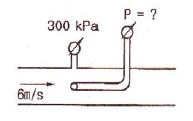
- 180
- 280
- 318
- 336
(정답률: 58%)
22. 양끝이 열린 가는 유리관을 물에 수직으로 세우면 표면장력에 의하여 물이 상승하지만 수은에서는 오히려 하강한다. 이러한 차이가 나타나는 원인은?
- 밀도의 차이
- 접촉각의 차이
- 공기와 액체 분자의 부착력 차이
- 점성계수의 차이
(정답률: 41%)
23. 물을 개방된 용기에 넣고 대기압 하에서 계속 열을 가하여도 액체의 물이 남아 있는 한 물의 온도가 100℃ 이상 온도가 올라가지 않는 것과 가장 관계가 있는 것은?
- 공급된 열이 모두 물의 내부 에너지로 저장되기 때문이다.
- 공급되는 열, 물의 온도 및 주위 온도와의 사이에서 열이 평형상태에 있기 때문이다.
- 물이 100 ℃에서 비등하기 때문이다.
- 공급되는 열량이 100 ℃에서 한계에 도달하였기 때문이다.
(정답률: 57%)
24. 터보기계 해석에 사용되는 속도 삼각형에 직접 포함되지 않는 것은?
- 날개속도 : U
- 날개에 대한 상대속도 : W
- 유체의 실제속도 : V
- 날개의 각속도 : w
(정답률: 55%)
25. 폴리트로픽 변화의 일반식 (pvn = 정수)에서 n=0 이면 어느 변화인가?
- 등압변화
- 등온변화
- 단열변화
- 폴리트로픽 팽창
(정답률: 52%)
26. 직경이 D/2인 출구를 통해 유체가 대기로 방출될 때, 이음매에 작용하는 힘은? (단, 마찰손실과 중력의 영향은 무시하고, 유체의 밀도 = p 단면적
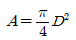
)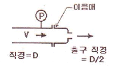
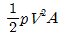
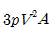
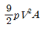
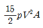
(정답률: 39%)
27. 입구 면적이 0.1m2, 출구 면적이 0.02m2인 수평한 노즐을 이용하여, 공기(밀도 1.23kg/m3)대기로 10m/s의 속도로 분출하려한다. 마찰을 무시하고 입출구에서 균일한 속도분포를 갖는다면, 이때 필요한 노즐 입구의 계기압은?
- 59 Pa
- 590 Pa
- 5.9 kPa
- 59 kPa
(정답률: 28%)
28. 그림과 같이 소방선 펌프가 물에 담긴 관으로부터 해수(비중 = 1.03)를 끌어들여 노즐을 통해 방수한다. 펌프 효율이 60%이고 펌프 동력이 3⑤ hp일 때 펌프 내부를 제외한 총 손실 수두는 대략 얼마인가? (단, 1hp = 746W, 물의 비중량 = 9790 N/m3)
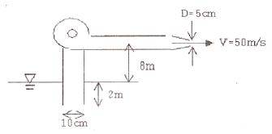
- 0.4m
- 1.4m
- 2.4m
- 3.4m
(정답률: 35%)
29. 그림과 같이 평형상태를 유지하고 있을 때 오른쪽 관에 있는 유체의 비중 S는?
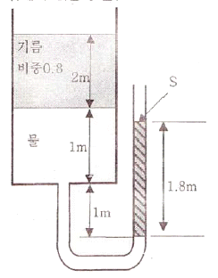
- 0.9
- 1.8
- 2.0
- 2.2
(정답률: 53%)
30. 펌프의 흡입양정이 클 때 발생될 수 있는 현상은?
- 공동현상(Cavitation)
- 서징현상(Surging)
- 역회전현상
- 수격현상(Water Hammering)
(정답률: 63%)
31. 지름 0.7m의 관 속에 5m/s의 평균속도로 물이 흐르고 있을 때 관의 길이 700m에 대한 마찰 손실수두는 약 몇 m 인가? (단, 관마찰계수는 0.03 이다.)
- 19
- 27
- 30
- 38
(정답률: 56%)
32. 어떤 물체가 공기 중에서 무게는 588 N이고, 수중에서 무게는 98 N이었다. 이 물체의 체적(V)과 비중(S)은?
- V = 0.⑤ m3, S = 1.2
- V = 50 cm3, S = 1.0
- V = 0.5 m3, S = 0.85
- V = 0.01 m3, S = 0.98
(정답률: 41%)
33. 그림과 같이 반지름이 0.8m 이고 폭이 2m인 곡면 AB가 수문으로 이용된다. 물에 의한 힘의 수평성분의 크기는 약 몇 kN 인가?
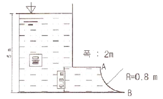
- 72.1
- 84.7
- 90.2
- 95.4
(정답률: 52%)
34. 표면온도가 90℃인 표면 (방사율 0.9)이 큰 방에 그림과 같이 놓여있다. 주위 및 방의 벽 온도는 10℃이다. 표면의 면적이 2m2 일 때, 대류 및 복사에 의한 표면에서의 전체 열 전달률은 약 몇 kW인가? (단, Stefan-Boltzmann 상수는 5.67×10-8 W/(m2ㆍK4)이고 대류열전달 계수는 10W/(m2ㆍK)이다.)
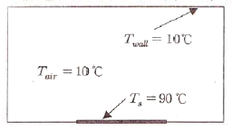
- 1.12
- 1.60
- 2.72
- 4.82
(정답률: 39%)
35. 다음 중 표준 대기압을 표시한 것으로 틀린 것은?
- 10.33 mAq
- 1.033 kgf/m2
- 760 mmHg
- 1.013 bar
(정답률: 52%)
36. 지름이 65 mm인 배관내로 물이 2.8 m/s의 속도로 흐를 때의 유동 형태는?(단, 물의 밀도는 998kg/m3, 점성계수는 0.001139 kg/mㆍs 이다.)
- 천이유동
- 층류
- 난류
- 와류
(정답률: 51%)
37. 점성계수에 대한 설명 중 옳지 않은 것은? (단, M은 질량, L은 길이, T는 시간을 나타낸다.)
- 차원은 ML-1T-1이다.
- 전단응력과 전단변형률이성형적인 관계를 갖는 유체를 Newton유체라고 한다.
- 온도의 변화에 따라 변화한다.
- 공기의 점성계수가 물보다 크다.
(정답률: 54%)
38. 수면의 면적이 10m2 인 저수조에 계속적으로 1m3/min의 유량으로 물이 채워지고 있다. 화재 초기에 수심은 2m였고 진화를 위해 2 m3/min의 물을 계속 사용한다면, 이 저수조가 고갈될 때까지는 약 몇 분 걸리겠는가?
- 15
- 20
- 25
- 30
(정답률: 49%)
39. 온도 150℃, 95kPa에서 2 kg/m3 의 밀도를 갖은 기체의 분자량은? (단, 일반 기체상수는 8314 J/kmolㆍK 이다.)
- 26
- 70
- 74
- 90
(정답률: 47%)
40. 소방호스의 노즐에서 출구속도를 기준으로 한 부차적 손실계수가 0.⑤일 때의 분사속도는 부차적 손실이 없을 때에 비해 몇 %가 느려지는가?
- 1.2
- 2.4
- 4.8
- 5.0
(정답률: 25%)
3과목: 소방관계법규
41. 다음 중 대통령령으로 정하는 화재경계지구의 지정대상지역으로 옳지 않은 것은?
- 소방통로가 있는 지역
- 목조건물이 밀집한 지역
- 공장ㆍ창고가 밀집한 지역
- 시장지역
(정답률: 69%)
42. 위험물시설의 설치 및 변경 등에 있어서 허가를 받지 아니하고 당해 제조소 등을 설치하거나 그 위치ㆍ구조 또는 설비를 변경할 수 있으며, 신고를 하지 아니하고 위험물의 품명ㆍ수량 또는 지정수량의 배수를 변경할 수 있는 경우의제조소 등으로 옳지 않은 것은?
- 주택의 난방시설을 위한 저장소 또는 취급소
- 공동주택의 중앙난방시설을 위한 저장소 또는 취급소
- 수산용으로 필요한 건조시설을 위한 지정수량 20배 이하의 저장소
- 농예용으로 필요한 난방시설을 위한 지정수량 20배 이하의 저장소
(정답률: 55%)
43. 다음 중 소방안전관리자를 두어야 하는 1급 소방안전관리대상물에 속하지 않는 것은?
- 층수가 15층인 건물
- 연면적이 20000 m2 인 건물
- 10층인 건물로서 연면적 10000 m2 인 건물
- 가연성가스 1500톤을 저장 ㆍ취급하는 시설
(정답률: 47%)
44. 특정소방대상물의 각 부분으로부터 수평거리 140 m 이내에 공공의 소방을 위한 소화전이 화재안전기준이 정하는 바에 따라 적합하게 설치되어 있는 경우에 설치가 면제되는 것은?
- 옥외소화전
- 연결송수관
- 연소방지설비
- 상수도소화용수설비
(정답률: 52%)
45. “소방용품”이란 소방시설 등을 구성하거나 소방용으로 사용되는 기기를 말하는데, 피난설비를 구성하는 제품 또는 기기에 속하지 않는 것은?
- 피난사다리
- 소화기구
- 공기호흡기
- 유도등
(정답률: 52%)
46. 다음 중 소방시설 등의 자체점검업무에 관한 종합정밀 점검 시 점검자의 자격이 될 수 없는 사람은?
- 소방시설관리업자(소방시설관리사가 참여한 경우)
- 소방안전관리자로 선임된 소방시설관리사
- 소방안전관리자로 선임된 소방기술사
- 소방기사
(정답률: 62%)
47. 소방시설관리업의 등록기준 중 이산화탄소 소화설비의 장비기준이 아닌 것은?
- 캡스패너
- 절연저항계
- 토크렌치
- 전류전압측정계
(정답률: 43%)
48. 인화성 액체인 제4류 위험물의 품명별 지정수량으로 옳지 않은 것은?
- 특수인화물- 50 L
- 제1석유류 중 비수용성액체 - 200 L
- 알코올류 - 300 L
- 제4석유류 - 6000 L
(정답률: 51%)
49. 건축물 등의 신축ㆍ증축ㆍ개축ㆍ재축 또는 이전의 허가ㆍ협의 및 사용승인의 권한이 있는 행정기관은 건축허가 등을 함에 있어서 미리 그 건축물 등의 공사시 공지 또는 소재지를 관할하는 소방본부장 또는 소방서장의 동의를 받아야 한다. 다음 중 건축허가 등의 동의대상물의 범위로서 옳지 않은 것은?
- 주차장으로 사용되는 층 중 바닥면적이 200 m2 이상인 층이 있는 시설
- 무창층이 있는 건축물로서 바닥면적이 150 m2 이상인 층이 있는 것
- 승강기 등 기계장치에 의한 주차시설로서 자동차 10대 이상을 주차할 수 있는 시설
- 수련시설로서 연면적 200 m2 이상인 건축물
(정답률: 64%)
50. 소방방재청장ㆍ소방본부장 또는 소방서장은 소방업무를 전문적이고 효과적으로 수행하기 위하여 소방대원에게 필요한 교육ㆍ훈련을 실시하여야 하는데, 다음 설명 중 옳지 않은 것은?
- 소방교육ㆍ훈련은 2년마다 1회 이상 실시하되, 교육 훈련기간은 2주 이상으로 한다.
- 법령에서 정한 것 이외의 소방교육ㆍ훈련의 실시에 관하여 필요한 사항은 소방방재청장이 정한다.
- 교육ㆍ훈련의 종류는 화재진압훈련, 인명구조훈련, 응급처치훈련, 민방위훈련, 현장지휘훈련이 있다.
- 현장지휘훈련은 지방소방위ㆍ지방소방경ㆍ지방소방령 및 지방소방정을 대상으로 한다.
(정답률: 55%)
51. 소방안전교육사와 관련된 내용으로 옳지 않은 것은?
- 소방안전교육사의 자격시험 실시권자는 안전행정부장관이다.
- 소방안전교육사는 소방안전교육의 기획ㆍ진행ㆍ분석ㆍ평가 및 교수업무를 수행한다.
- 한정치산자는 소방안전교육사가 될 수 없다.
- 소방안전교육가를 소방방재청에 배치할 수 있다.
(정답률: 55%)
52. 소방본부장 또는 소방서장 등이 화재현장에서 소화활동을 원활히 수행하기 위하여 규정하고 있는 사항으로 틀린 것은?
- 화재경계지구의 지정
- 강제처분
- 소방활동 종사명령
- 피난명령
(정답률: 58%)
53. 방염대상물품 중 제조 또는 가공공정에서 방염처리를 하여야 하는 물품이 아닌 것은?
- 암막
- 두께가 2mm 미만인 종이벽지
- 무대용 합판
- 창문에 설치하는 블라인드
(정답률: 67%)
54. 전문소방시설공사업의 법인의 자본금은?
- 5천만원 이상
- 1억원 이상
- 2억원 이상
- 3억 이상
(정답률: 59%)
55. 지정수량의 10배 이상의 위험물을 저장 또는 취급하는 제조소 등(이동탱크저장소를 제외한다.)에는 화재발생시 이를 알릴 수 있는 경보설비를 설치하여야 한다. 이 경보설비의 종류로서 옳지 않은 것은?
- 확성장치(휴대용확성기 포함)
- 비상방송설비
- 자동화재탐지설비
- 자동화재속보설비
(정답률: 42%)
56. 소방안전관리대상물의 소방계획서에 포함되어야 할 내용으로 옳지 않은 것은?
- 소방안전관리대상물의 위치ㆍ구조ㆍ연면적ㆍ용도 및 수용인원 등의 일반현황
- 화재예방을 위한 자체점검계획 및 진압대책
- 재난방지계획 및 민방위조직에 관한 사항
- 특정소방대상물의 근무자 및 거주자의 자위소방대 조직과 대원의 임무에 관한 사항
(정답률: 57%)
57. 소방대상물의 관계인은 소방대상물에 화재, 재난, 재해등이 발생한 경우 소방대가 현장에 도착할때까지 사람을 구출하는 조치 또는 불을 끄거나 불이 번지지 않도록 조치를 하여야 한다. 정당한 사유 없이 이를 위반한 관계인에 대한 벌칙은?
- 1년 이하의 징역
- 1000만원 이하의 벌금
- 500만원 이하의 벌금
- 100만원 이하의 벌금
(정답률: 48%)
58. 소방시설공사업자는 소방시설공사를 하려면 소방시설 착공(변경)신고서 등의 서류를 첨부하여 소방본부장 또는 소방서장에게 언제까지 신고하여야 하는가?
- 착공 전까지
- 착공 후 7일 이내
- 착공 후 14일 이내
- 착공 후 30일 이내
(정답률: 52%)
59. 소방안전관리자 선임에 관한 설명 중 옳은 것은?
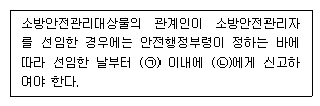
- ㉠ 14일 ㉡ 시ㆍ도지사
- ㉠ 14일 ㉡ 소방본부장이나 소방서장
- ㉠ 30일 ㉡ 시ㆍ도지사
- ㉠ 30일 ㉡ 소방본부장이나 소방서장
(정답률: 39%)
60. 소방시설설치유지 및 안전관리에 관한 법률시행령에서 규정하는 소화활동설비에 속하지 않는 것은?
- 제연설비
- 연결송수관설비
- 무선통신보조설비
- 비상방송설비
(정답률: 55%)
4과목: 소방기계시설의 구조 및 원리
61. 제연설비가 설치된 부분의 거실 바닥면적이 400m2 이상이고 수직거리가 2m 이하일 때, 예상제연구역이 직경이 40m 인 원의 범위를 초과한다면 예상 제연구역의 배출량은 얼마 이상이어야 하는가?
- 25000m3/hr
- 30000m3/hr
- 40000m3/hr
- 45000m3/hr
(정답률: 45%)
62. 폐쇄형스프링클러헤드에서 그 설치장소의 평상시 최고 주위온도와 표시온도와의 관계가 옳은 것은?
- 설치장소의 최고 주위온도보다 표시온도가 높은 것을 선택
- 설치장소의 최고 주위온도보다 표시온도가 낮은 것을 선택
- 설치장소의 최고 주위온도와 표시온도가 같은 것을 선택
- 설치장소의 최고 주위온도와 표시온도는 관계없음
(정답률: 70%)
63. 국내 규정상 단위 옥내소화전설비 가압송수장치의 최소시설기준으로 다음과 같은 항목을 맞게 열거한 것은? (단, 순서는 법정 최소 방사량(ℓ/min) - 법정 최소방출압력(MPa) - 법정 최소 방출시간(분)이다.)
- 130ℓ/min-1.0MPa-30분
- 350ℓ/min-2.5MPa-30분
- 130ℓ/min-0.17MPa-20분
- 350ℓ/min-3⑤MPa-20분
(정답률: 70%)
64. 송풍기 등을 사용하여 건축물 내부에 발생한 연기를 제연구획까지 풍도를 설치하여 강제로 제연하는 방식은?
- 밀폐 제연방식
- 자연 제연방식
- 기계 제연방식
- 스모크 타워 제연방식
(정답률: 73%)
65. 전역 방출방식의 분말소화설비에 있어서 방호구역의 용적이 500m3일 때 적합한 분사헤드의 수는? (단, 제1종 분말이며, 체적 1m3당 소화약제양은 0.60kg이며, 분사헤드 1개의 분당 표준방사량은 18kg이다.)
- 34개
- 134개
- 17개
- 30개
(정답률: 55%)
66. 다음 중 피난기구를 설치하지 아니하여도 되는 소방대상물(피난기구 설치제외 대상)이 아닌 것은?
- 발코니 등을 통하여 인접세대로 피난할 수 있는 구조로 되어 있는 계단실형 아파트
- 주요구조부가 내화구조로서 거실의 각 부분으로 직접복도로 피난할 수 있는 학교의 강의실 용도로 사용되는 층
- 무인공장 또는 자동창고로서 사람의 출입이 금지된 장소
- 문화집회 및 운동시설ㆍ판매시설 및 영업시설 또는 노유자시설의 용도로 사용되는 층으로서 그 층의 바닥면적이 1000m3 이상인 곳
(정답률: 62%)
67. 다음 중 옥내소화전 방수구를 설치하여야 하는 곳은?
- 냉장창고의 냉장실
- 식물원
- 수영장의 관람석
- 수족관
(정답률: 68%)
68. 스프링클러헤드의 강도를 반응시간지수(RTI) 값에 따라 구분할 때 RTI 값이 51 초과 80 이하일 때의 헤드 감도는?
- Fast response
- Special response
- Standard response
- Quick response
(정답률: 69%)
69. 연결송수관설비 송수구에 관한 설명 가운데 옳지 않은 것은?
- 송수구 부근에 설치하는 체크밸브 등은, 습식의 경우 송수구, 자동배수밸브, 체크밸브 순으로 설치하여야 한다.
- 연결송수관의 수직배관마다 1개 이상을 설치하여야 한다.
- 지면으로 부터의 높이가 0.5m 이상 1m 이하의 위치가 되도록 설치하여야 한다.
- 구경 65mm의 단구형으로 설치하여야 한다.
(정답률: 68%)
70. 포소화설비의 자동식 기동장치에 사용되는 1개의 폐쇄형 스프링클러 헤드의 기준 경계면적은 얼마 이하인가?
- 9m2
- 15m2
- 20m2
- 25m2
(정답률: 46%)
71. 청정소화약제의 저장용기의 설치기준 설명 중 틀린 것은?
- 방화문으로 구획된 실에 설치한다.
- 용기간의 간격을 3cm 이상의 간격을 유지한다.
- 온도가 40℃ 이하이고, 온도의 변화가 작은 곳에 설치한다.
- 저장용기와 집합관을 연결하는 연결배관에는 체크밸브를 설치한다.
(정답률: 62%)
72. 이산화탄소 소화설비(고압식)의 배관으로 호칭구경 50mm 강관을 사용하려 한다. 이 때 적용하는 배관 스케줄의 한계는?
- 스케줄 20 이상
- 스케줄 30 이상
- 스케줄 40 이상
- 스케줄 80 이상
(정답률: 55%)
73. 물분무 소화설비의 배수설비를 차고 및 주차장에 설치하고자 할 때 설치기준에 맞지 않는 것은?
- 차량이 주차하는 장소의 적당한 곳에 높이 10cm 이상의 경계턱으로 배수구를 설치할 것
- 길이 40m 이하마다 집수관, 소화핏트 등 기름분리장치를 설치할 것
- 차량이 주차하는 바닥은 배수구를 향하여 100분의 1 이상의 기울기를 유지할 것
- 배수설비는 가압송수장치의 최대 송수능력의 수량을 유효하게 배수할 수 있는 크기 및 기울기로 할 것
(정답률: 77%)
74. 연결살수설비의 배관 설치기준으로 적합하지 않은 것은?
- 연결살수설비 전용헤드를 사용하는 경우 배관의 구경 80mm일 때 하나의 배관에 부착되는 살수헤드의 개수는 6개 이상 10개 이하이다.
- 폐쇄형헤드를 사용하는 경우의 시험배관은 송수구의 가장 먼 가지배관의 끝으로부터 연결하여 설치하여야 한다.
- 개방형헤드를 사용하는 수평주행배관은 헤드를 향하여 상향으로 1/100 이상의 기울기로 설치한다.
- 가지배관 또는 교차배관을 설치하는 경우에는 가지배관은 교차배관 또는 주배관에서 분기되는 지점을 기점으로 한 쪽 가지배관에 설치되는 헤드의 개수는 10개 이하로 한다.
(정답률: 42%)
75. 스프링클러설비 배관에 대한 내용 중 잘못된 것은?
- 습식설비의 교차배관에 설치하는 청소구 헤드설치는 최소구경이 25mm 이상의 것으로 한다.
- 가지배관의 배열은 토너먼트 방식이 아니어야 한다.
- 습식설비에서 햐향식헤드는 가지배관으로부터 헤드에 이르는 헤드접속배관은 가지관상부에서 분기한다.
- 수직 배수배관의 구경은 50mm 이상으로 하여야 한다.
(정답률: 47%)
76. 분말 소화약제의 가압용 가스용기의 설치 기준에 대한 설명으로서 틀린 것은?
- 가압용 가스는 질소가스 또는 이산화탄소로 한다.
- 가압용 가스용기를 3병 이상 설치한 경우에 있어서는 2개 이상의 용기에 전자 개방밸브를 부착한다.
- 분말소화약제의 가스용기는 분말 소화약제의 저장용기에 접속하여 설치한다.
- 분말 소화약제의 가압용 가스용기에는 2.5MPa 이상의 압력에서 압력 조정이 가능한 압력조정기를 설치한다.
(정답률: 53%)
77. 포워터스프링클러헤드는 바닥면적 몇 m2마다 1개 이상으로 설치하는가?
- 7m2
- 8m2
- 9m2
- 10m2
(정답률: 62%)
78. 물분무소화설비의 수원은 특수가연물을 저장 또는 취급하는 소방대상물 또는 그 부분에 있어서 그 최대방수구역의 바닥면적 1m2에 대하여 분당 몇 ℓ로 20분간 방사할 수 있는 양 이상이어야 하는가?
- 5ℓ
- 10ℓ
- 15ℓ
- 20ℓ
(정답률: 61%)
79. 이산화탄소소화설비 배관의 구경은 이산화탄소의 소요량이 몇 분 이내에 방사되어야 하는가? (단, 전역방출방식에 있어서 합성수지류의 심부화재방호대상물의 경우이다.)
- 1분
- 3분
- 5분
- 7분
(정답률: 53%)
80. 피난기구의 화재안전기준상 피난기구를 설치하여야 할 소방 대상물 중 피난기구의 2분의 1을 감소할 수 있는 조건이 아닌 것은?
- 주요구조부가 내화구조로 되어 있을 것
- 비상용 엘리베이터(elevator)가 설치되어 있을 것
- 직통계단인 피난계단이 2 이상 설치되어 있을 것
- 직통계단인 특별피난계단이 2 이상 설치되어 있을 것
(정답률: 67%)